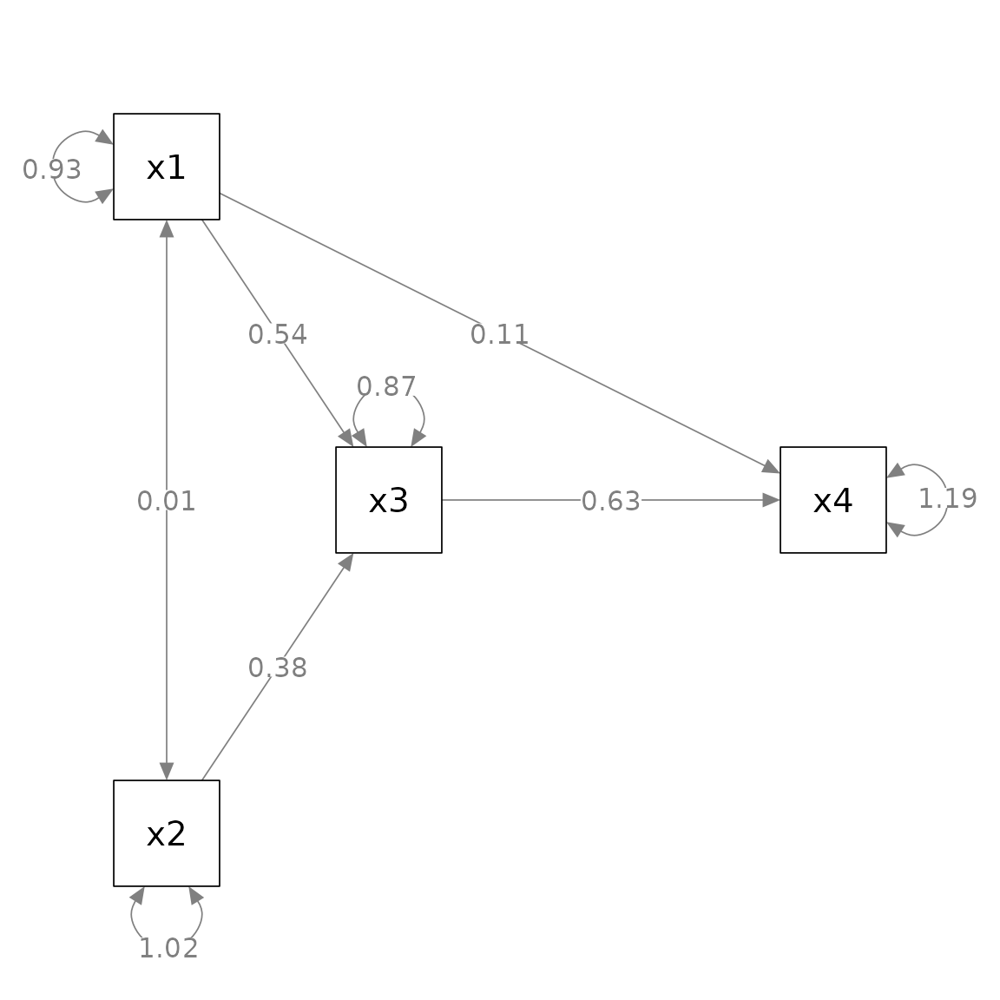

A Quick Start Guide on Using semptools
Shu Fai Cheung & Mark Hok Chio Lai
2025-07-05
Source:vignettes/semptools.Rmd
semptools.RmdIntroduction
The package semptools (CRAN page)
contains functions that post-process an output from
semPlot::semPaths(), to help users to customize the
appearance of the graphs generated by
semPlot::semPaths().
The following sections were written to be self-contained, with some elements repeated, such that each of them can be read individually.
Mark all parameter estimates by asterisks based on p-Value:
mark_sig
Let us consider a simple path analysis model:
library(lavaan)
#> This is lavaan 0.6-19
#> lavaan is FREE software! Please report any bugs.
mod_pa <-
'x1 ~~ x2
x3 ~ x1 + x2
x4 ~ x1 + x3
'
fit_pa <- lavaan::sem(mod_pa, pa_example)
parameterEstimates(fit_pa)
#> lhs op rhs est se z pvalue ci.lower ci.upper
#> 1 x1 ~~ x2 0.005 0.097 0.054 0.957 -0.186 0.196
#> 2 x3 ~ x1 0.537 0.097 5.551 0.000 0.348 0.727
#> 3 x3 ~ x2 0.376 0.093 4.050 0.000 0.194 0.557
#> 4 x4 ~ x1 0.111 0.127 0.875 0.382 -0.138 0.361
#> 5 x4 ~ x3 0.629 0.108 5.801 0.000 0.416 0.841
#> 6 x3 ~~ x3 0.874 0.124 7.071 0.000 0.632 1.117
#> 7 x4 ~~ x4 1.194 0.169 7.071 0.000 0.863 1.525
#> 8 x1 ~~ x1 0.933 0.132 7.071 0.000 0.674 1.192
#> 9 x2 ~~ x2 1.017 0.144 7.071 0.000 0.735 1.298This is the plot from semPaths.
library(semPlot)
m <- matrix(c("x1", NA, NA, NA,
NA, "x3", NA, "x4",
"x2", NA, NA, NA), byrow = TRUE, 3, 4)
p_pa <- semPaths(fit_pa, whatLabels = "est",
sizeMan = 10,
edge.label.cex = 1.15,
style = "ram",
nCharNodes = 0, nCharEdges = 0,
layout = m)
We know from the lavaan::lavaan() output that some paths
are significant and some are not. In some disciplines, asterisks are
conventionally added indicate this. However,
semPlot::semPaths() does not do this. We can use
mark_sig() to add asterisks based on the p-values of the
free parameters.
The first argument, semPaths_plot, is the output from
semPaths::semPlot(). The second argument,
object, is the lavaan::lavaan() output used to
generate the plot. This output is needed to extract the
p-values.
The default labels follow the common convention: “*” for p
less than .05, “**” for p less than .01, and “***” for p less
than .001. This can be changed by the argument alpha (this
must be named as the it is not the second argument). E.g.:

Add standard error estimates to parameter estimates:
mark_se
Let us consider a simple path analysis model:
library(lavaan)
mod_pa <-
'x1 ~~ x2
x3 ~ x1 + x2
x4 ~ x1 + x3
'
fit_pa <- lavaan::sem(mod_pa, pa_example)
parameterEstimates(fit_pa)
#> lhs op rhs est se z pvalue ci.lower ci.upper
#> 1 x1 ~~ x2 0.005 0.097 0.054 0.957 -0.186 0.196
#> 2 x3 ~ x1 0.537 0.097 5.551 0.000 0.348 0.727
#> 3 x3 ~ x2 0.376 0.093 4.050 0.000 0.194 0.557
#> 4 x4 ~ x1 0.111 0.127 0.875 0.382 -0.138 0.361
#> 5 x4 ~ x3 0.629 0.108 5.801 0.000 0.416 0.841
#> 6 x3 ~~ x3 0.874 0.124 7.071 0.000 0.632 1.117
#> 7 x4 ~~ x4 1.194 0.169 7.071 0.000 0.863 1.525
#> 8 x1 ~~ x1 0.933 0.132 7.071 0.000 0.674 1.192
#> 9 x2 ~~ x2 1.017 0.144 7.071 0.000 0.735 1.298This is the plot from semPlot::semPaths().
library(semPlot)
m <- matrix(c("x1", NA, NA, NA,
NA, "x3", NA, "x4",
"x2", NA, NA, NA), byrow = TRUE, 3, 4)
p_pa <- semPaths(fit_pa, whatLabels = "est",
sizeMan = 10,
edge.label.cex = 1.15,
style = "ram",
nCharNodes = 0, nCharEdges = 0,
layout = m)
We can use mark_se() to add the standard errors for the
parameter estimates:
The first argument, semPaths_plot, is the output from
semPaths::semPlot(). The second argument,
object, is the lavaan::lavaan() output used to
generate the plot. This output is needed to extra the standard
errors.
By default, the standard errors are enclosed by parentheses and
appended to the parameter estimates, separated by one space. The
argument sep can be used to use another separator. For
example, if "\n" is used, the standard errors will be
displayed below the corresponding parameter estimates.

Rotate the residuals of selected variables:
rotate_resid
Let us consider a simple path analysis model:
library(lavaan)
mod_pa <-
'x1 ~~ x2
x3 ~ x1 + x2
x4 ~ x1 + x3
'
fit_pa <- lavaan::sem(mod_pa, pa_example)This is the plot from semPlot::semPaths().
library(semPlot)
m <- matrix(c("x1", NA, NA, NA,
NA, "x3", NA, "x4",
"x2", NA, NA, NA), byrow = TRUE, 3, 4)
p_pa <- semPaths(fit_pa, whatLabels = "est",
sizeMan = 10,
edge.label.cex = 1.15,
style = "ram",
nCharNodes = 0, nCharEdges = 0,
layout = m)
Suppose we want to rotate the residuals of some variables to improve readability.
For
x3, we want to place the residual to top-right corner.For
x4, we want to place the residual to the top-left corner.For
x2, we want to place the residual to the left.
We first need to decide the angle of placement, in degrees.
Top is 0 degree. Clockwise position is positive, and anticlockwise position is negative.
Therefore, top-right is 45, top-left is -45, and left is -90.
We then use rotate_resid() to post-process the
semPlot::semPaths() output. The first argument,
semPaths_plot, is the semPlot::semPaths()
output. The second argument, rotate_resid_list, is the
vector to specify how the residuals should be rotated. The name is the
node for which the residual will be rotated, and the value is the degree
of rotation. For example, to achieve the results described above, the
vector is c(x3 = 45, x4 = -45, x2 = -90):
library(semptools)
my_rotate_resid_list <- c(x3 = 45,
x4 = -45,
x2 = -90)
p_pa3 <- rotate_resid(p_pa, my_rotate_resid_list)
plot(p_pa3)(Note: This function accepts named vectors since version 0.2.8. Lists
of named list are still supported but not suggested. Please see
?rotate_resid on how to use lists of named list.)
Set the curve attributes of selected arrows:
set_curve
Let us consider a simple path analysis model:
library(lavaan)
mod_pa <-
'x1 ~~ x2
x3 ~ x1 + x2
x4 ~ x1 + x3
'
fit_pa <- lavaan::sem(mod_pa, pa_example)This is the plot from semPaths.
library(semPlot)
m <- matrix(c("x1", NA, NA, NA,
NA, "x3", NA, "x4",
"x2", NA, NA, NA), byrow = TRUE, 3, 4)
p_pa <- semPaths(fit_pa, whatLabels = "est",
sizeMan = 10,
edge.label.cex = 1.15,
style = "ram",
nCharNodes = 0, nCharEdges = 0,
layout = m)
Suppose we want to change the curvature of these two arrows
(edges):
Have the
x1 ~~ x2covariance curved “away” from the center.Have the
x4 ~ x1path curved upward.
We then use set_curve() to post-process the
semPlot::semPaths() output. The first argument,
semPaths_plot, is the semPlot::semPaths()
output. The second argument, curve_list, is the list to
specify the new curvature of the selected arrows.
The “name” of each element is of the same form as
lhs-op-rhs as in lavaan::lavaan() model
syntax. In lavaan, y ~ x denotes an arrow from
x to y. Therefore, if we want to change the
curvature of the path from x to
y to -3, then the element is "y ~ x" = -3.
Note that whether ~ or ~~ is used does not
matter.
To achieve the changes described above, we can use
c("x2 ~~ x1" = -3, "x4 ~ x1" = 2), as shown below:
my_curve_list <- c("x2 ~~ x1" = -3,
"x4 ~ x1" = 2)
p_pa3 <- set_curve(p_pa, my_curve_list)
plot(p_pa3)Note that the meaning of the value depends on which variable is in
the from field and which variable is in the to
field. Therefore, "x2 ~~ x1" = -3 and
"x1 ~~ x2" = -3 are two different changes. If we treat the
from variable as the back and the to variable
as the front, then a positive number bends the line to
left, and a negative number bends the line to the
right.
It is not easy to decide what the value should be used to set the
curve. Trial and error is needed for complicated models. The
curve attributes of the corresponding arrows of the
qgraph object will be updated.
(Note: This function accepts named vectors since version 0.2.8. Lists
of named list are still supported but not suggested. Please see
?set_curve on how to use lists of named list.)
Set the positions of parameters of selected arrows:
set_edge_label_position
Let us consider a simple path analysis model:
library(lavaan)
mod_pa <-
'x1 ~~ x2
x3 ~ x1 + x2
x4 ~ x1 + x3
'
fit_pa <- lavaan::sem(mod_pa, pa_example)This is the plot from semPlot::semPaths().
library(semPlot)
m <- matrix(c("x1", NA, NA, NA,
NA, "x3", NA, "x4",
"x2", NA, NA, NA), byrow = TRUE, 3, 4)
p_pa <- semPaths(fit_pa, whatLabels = "est",
sizeMan = 10,
edge.label.cex = 1.15,
style = "ram",
nCharNodes = 0, nCharEdges = 0,
layout = m)
Suppose we want to move the parameter estimates this way:
For the
x4 ~ x1path, move the parameter estimates closer tox4.For the
x3 ~ x1path, move the parameter estimates closer tox1.For the
x3 ~ x2path, move the parameter estimates closer tox2.
We can use set_edge_label_position() to post-process the
semPlot::semPaths output. The first argument,
semPaths_plot, is the semPlot::semPaths()
output. The second argument, position_list, is the list to
specify the new position of the selected arrows.
We can use a named vector to specify the changes. The “name” of each
element is of the same form as lhs-op-rhs as in
lavaan::lavaan() model syntax. In lavaan,
y ~ x denotes an arrow from x to
y. Therefore, if we want to change the curvature of the
path from x to y to -3, then
the element is "y ~ x" = -3. Note that whether
~ or ~~ is used does not matter.
Therefore, the changes described above can be specified by
c("x2 ~~ x1" = -3, "x4 ~ x1" = 2), as shown below:
library(semptools)
my_position_list <- c("x3 ~ x1" = .25,
"x3 ~ x2" = .25,
"x4 ~ x1" = .75)
p_pa3 <- set_edge_label_position(p_pa, my_position_list)
plot(p_pa3)(Note: This function accept named vectors since version 0.2.8. Lists
of named list are still supported but not suggested. Please see
?set_edge_label_position on how to use lists of named
list.)
Change one or more node labels: change_node_label
semPlot::semPaths() supports changing the labels of
nodes when generating a plot through the argument
nodeLabels. However, if we want to use functions such as
mark_sig() or mark_se(), which require
information from the original results from the original
lavaan output, then we cannot use nodeLabels
because these functions do not (yet) know how to map a user-defined
label to the variables in the lavaan output.
One solution is to use semptools functions to process
the qgraph generated by semPlot::semPaths(),
and change the node labels in last step to create the final
plot. This can be done by change_node_label().
Let us consider a simple path analysis model in which we use
marg_sig() to add asterisks to denote significant
parameters:
library(lavaan)
library(semPlot)
library(semptools)
mod_pa <-
'x1 ~~ x2
x3 ~ x1 + x2
x4 ~ x1 + x3
'
fit_pa <- lavaan::sem(mod_pa, pa_example)
m <- matrix(c("x1", NA, NA, NA,
NA, "x3", NA, "x4",
"x2", NA, NA, NA), byrow = TRUE, 3, 4)
p_pa <- semPaths(fit_pa, whatLabels = "est",
sizeMan = 10,
edge.label.cex = 1.15,
style = "ram",
nCharNodes = 0, nCharEdges = 0,
layout = m)
Suppose we want change x1, x2,
x3, and x4 to Attitude,
SbjNorm, Intention, and Behavior,
we process the graph, p_pa2 above, by
change_node_label() as below:
p_pa3 <- change_node_label(p_pa2,
c(x1 = "Attitude",
x2 = "SbjNorm",
x3 = "Intention",
x4 = "Behavior"),
label.cex = 1.1)
plot(p_pa3)The second argument can be a named vector or a named list. The name
of each element is the original label (e.g., x1 in this
example), and the value is the new label (e.g., "Attitude"
for x1). Only the labels of named nodes will be
changed.
Note that usually we also set the label.cex argument,
which is identical to the same argument in
semPlot::semPaths() because the new labels might not fit
the nodes.
Using pipe-operator
All the functions support the %>% operator from
magrittr or the native pipe operator |>
available since R 4.1.x. Therefore, we can chain the
post-processing.
library(lavaan)
mod_pa <-
'x1 ~~ x2
x3 ~ x1 + x2
x4 ~ x1 + x3
'
fit_pa <- lavaan::sem(mod_pa, pa_example)This is the initial plot:
library(semPlot)
m <- matrix(c("x1", NA, NA, NA,
NA, "x3", NA, "x4",
"x2", NA, NA, NA), byrow = TRUE, 3, 4)
p_pa <- semPaths(fit_pa, whatLabels = "est",
sizeMan = 10,
edge.label.cex = 1.15,
style = "ram",
nCharNodes = 0, nCharEdges = 0,
layout = m)
We will do this:
Change the curvature of
x1 ~~ x2Rotate the residuals of
x1,x2,x3, andx4,Add asterisks to denote significant test results
Add standard errors
Move the parameter estimate of the
x4 ~ x1path closer tox4.
my_position_list <- c("x4 ~ x1" = .75)
my_curve_list <- c("x2 ~ x1" = -2)
my_rotate_resid_list <- c(x1 = 0, x2 = 180, x3 = 140, x4 = 140)
my_position_list <- c("x4 ~ x1" = .65)
# If R version 4.1.0 or above
p_pa3 <- p_pa |> set_curve(my_curve_list) |>
rotate_resid(my_rotate_resid_list) |>
mark_sig(fit_pa) |>
mark_se(fit_pa, sep = "\n") |>
set_edge_label_position(my_position_list)
plot(p_pa3)#> Loading required package: magrittrFor most of the functions, the necessary argument beside the
semPlot::semPaths output, if any, is the second element.
Therefore, they can be included as unnamed arguments. For the third and
other optional arguments, such as sep for
mark_se(), it is better to name them.